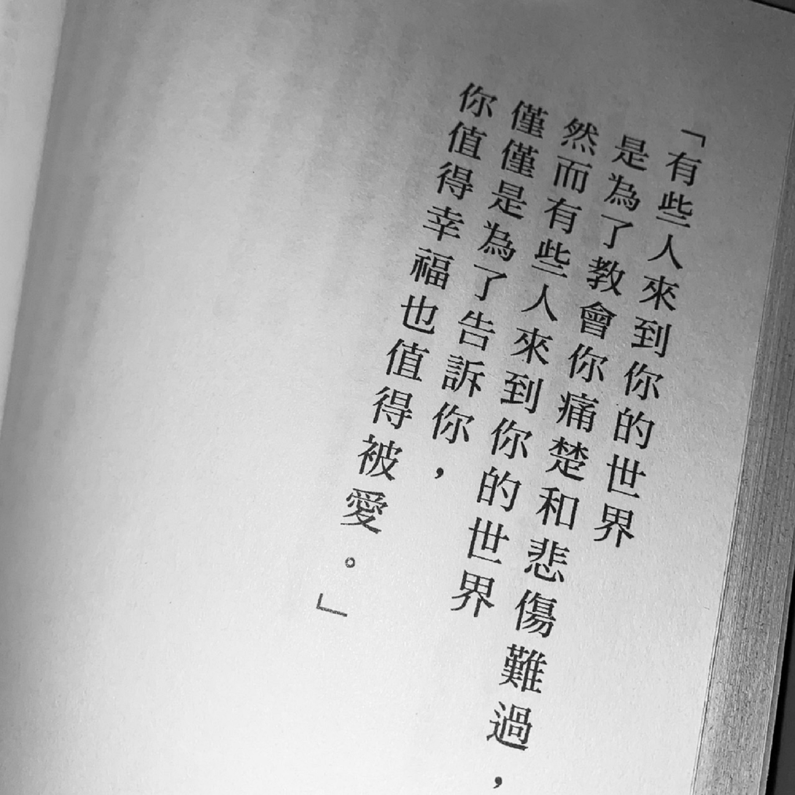
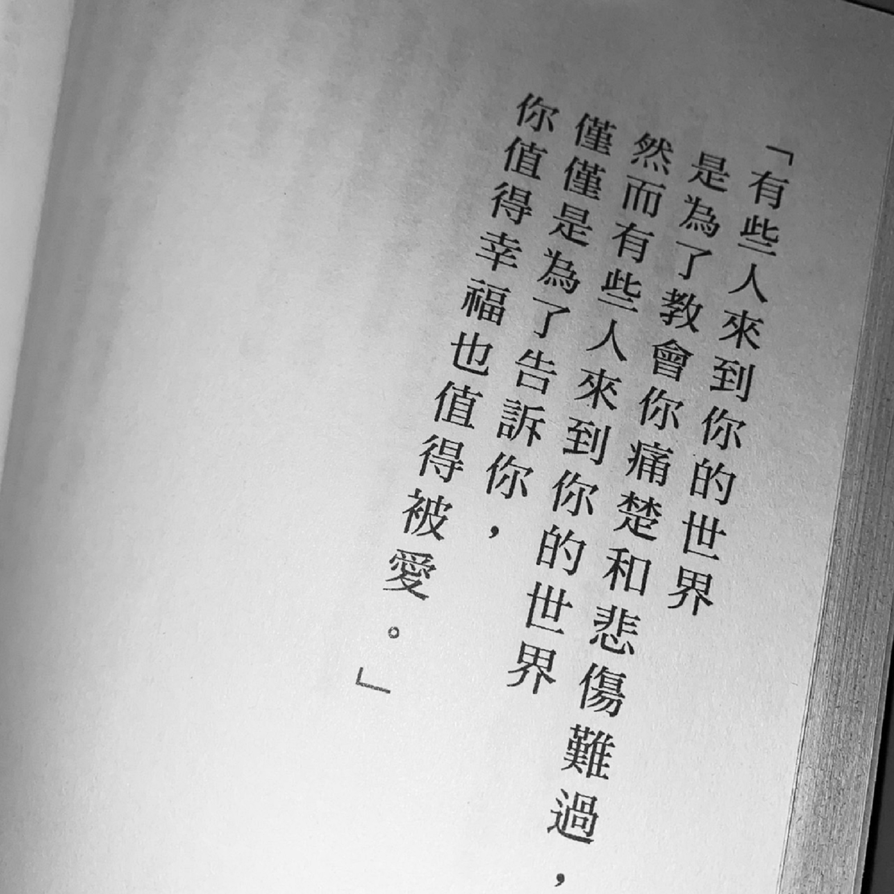

.˗ˏˋ♡ˎˊ˗ᴛʜᴇ ᴄᴏᴍᴘᴏsɪᴛɪᴏɴ ᴏғ ʟᴜɴᴀ˗ˏˋ♡ˎˊ˗
我的習慣
 
 

我的習慣是每天睡前都會看幾頁的書。
腦袋在一天之中經歷了各種思考，在睡前放鬆、整理一下思緒的話會比較好睡，之前沒有這個習慣的我，總是在睡覺時輾轉難眠。
因為腦袋中塞滿了一天所有的思緒，任何的記憶都會在我最該放鬆的時刻浮現，導致我不斷去思考那些種種，壓力也會隨之而來。
現在我透過睡前閱讀的習慣，我能在閱讀時把所有該思考該整理的思緒都用盡，並且不讓眼睛再接觸3C產品，不僅讓腦袋放鬆，眼睛也能適度的休息。